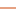

<!doctype html>
<html lang="en">
    <head>
        <meta charset="utf-8">
        <meta http-equiv="X-UA-Compatible" content="IE=edge">
        <meta name="viewport" content="initial-scale=1,user-scalable=no,maximum-scale=1,width=device-width">
        <meta name="mobile-web-app-capable" content="yes">
        <meta name="apple-mobile-web-app-capable" content="yes">
        <link rel="stylesheet" href="css/leaflet.css">
        <link rel="stylesheet" href="css/qgis2web.css"><link rel="stylesheet" href="css/fontawesome-all.min.css">
        <link rel="stylesheet" href="css/filter.css">
<link rel="stylesheet" href="css/nouislider.min.css">
        <link rel="stylesheet" href="css/leaflet-control-geocoder.Geocoder.css">
        <style>
        #map {
            width: 1550px;
            height: 850px;
        }
        </style>
        <title></title>
    </head>
    <body>
        <div id="map">
        </div>
        <script src="js/qgis2web_expressions.js"></script>
        <script src="js/leaflet.js"></script>
        <script src="js/leaflet.rotatedMarker.js"></script>
        <script src="js/leaflet.pattern.js"></script>
        <script src="js/leaflet-hash.js"></script>
        <script src="js/Autolinker.min.js"></script>
        <script src="js/rbush.min.js"></script>
        <script src="js/labelgun.min.js"></script>
        <script src="js/labels.js"></script>
        <script src="js/leaflet-control-geocoder.Geocoder.js"></script>
        <script src="js/tailDT.js"></script>
<script src="js/nouislider.min.js"></script>
<script src="js/wNumb.js"></script>
        <script src="data/National_Wild_and_Scenic_River_Eligible_and_Suitable_Segments_Feature_Layer_1.js"></script>
        <script>
        var highlightLayer;
        function highlightFeature(e) {
            highlightLayer = e.target;

            if (e.target.feature.geometry.type === 'LineString') {
              highlightLayer.setStyle({
                color: '#ffff00',
              });
            } else {
              highlightLayer.setStyle({
                fillColor: '#ffff00',
                fillOpacity: 1
              });
            }
        }
        var map = L.map('map', {
            zoomControl:true, maxZoom:28, minZoom:1
        }).fitBounds([[36.00110362025874,-126.26605962108735],[48.394968709199155,-103.6414096709933]]);
        var hash = new L.Hash(map);
        map.attributionControl.setPrefix('<a href="https://github.com/tomchadwin/qgis2web" target="_blank">qgis2web</a> &middot; <a href="https://leafletjs.com" title="A JS library for interactive maps">Leaflet</a> &middot; <a href="https://qgis.org">QGIS</a>');
        var autolinker = new Autolinker({truncate: {length: 30, location: 'smart'}});
        var bounds_group = new L.featureGroup([]);
        function setBounds() {
        }
        map.createPane('pane_OSMStandard_0');
        map.getPane('pane_OSMStandard_0').style.zIndex = 400;
        var layer_OSMStandard_0 = L.tileLayer('http://tile.openstreetmap.org/{z}/{x}/{y}.png', {
            pane: 'pane_OSMStandard_0',
            opacity: 1.0,
            attribution: '<a href="https://www.openstreetmap.org/copyright">© OpenStreetMap contributors, CC-BY-SA</a>',
            minZoom: 1,
            maxZoom: 28,
            minNativeZoom: 0,
            maxNativeZoom: 19
        });
        layer_OSMStandard_0;
        map.addLayer(layer_OSMStandard_0);
        function pop_National_Wild_and_Scenic_River_Eligible_and_Suitable_Segments_Feature_Layer_1(feature, layer) {
            layer.on({
                mouseout: function(e) {
                    for (i in e.target._eventParents) {
                        e.target._eventParents[i].resetStyle(e.target);
                    }
                },
                mouseover: highlightFeature,
            });
            var popupContent = '<table>\
                    <tr>\
                        <td colspan="2">' + (feature.properties['OBJECTID'] !== null ? autolinker.link(feature.properties['OBJECTID'].toLocaleString()) : '') + '</td>\
                    </tr>\
                    <tr>\
                        <td colspan="2">' + (feature.properties['RIVER_ID'] !== null ? autolinker.link(feature.properties['RIVER_ID'].toLocaleString()) : '') + '</td>\
                    </tr>\
                    <tr>\
                        <td colspan="2"><strong>RIVER_NAME</strong><br />' + (feature.properties['RIVER_NAME'] !== null ? autolinker.link(feature.properties['RIVER_NAME'].toLocaleString()) : '') + '</td>\
                    </tr>\
                    <tr>\
                        <td colspan="2">' + (feature.properties['SEGMENT_ID'] !== null ? autolinker.link(feature.properties['SEGMENT_ID'].toLocaleString()) : '') + '</td>\
                    </tr>\
                    <tr>\
                        <th scope="row">SEGMENT_CL</th>\
                        <td>' + (feature.properties['SEGMENT_CL'] !== null ? autolinker.link(feature.properties['SEGMENT_CL'].toLocaleString()) : '') + '</td>\
                    </tr>\
                    <tr>\
                        <td colspan="2">' + (feature.properties['ELIGIBLE'] !== null ? autolinker.link(feature.properties['ELIGIBLE'].toLocaleString()) : '') + '</td>\
                    </tr>\
                    <tr>\
                        <td colspan="2">' + (feature.properties['SUITABLE'] !== null ? autolinker.link(feature.properties['SUITABLE'].toLocaleString()) : '') + '</td>\
                    </tr>\
                    <tr>\
                        <td colspan="2">' + (feature.properties['MILES'] !== null ? autolinker.link(feature.properties['MILES'].toLocaleString()) : '') + '</td>\
                    </tr>\
                    <tr>\
                        <td colspan="2">' + (feature.properties['STATUS'] !== null ? autolinker.link(feature.properties['STATUS'].toLocaleString()) : '') + '</td>\
                    </tr>\
                    <tr>\
                        <td colspan="2">' + (feature.properties['MILES_WITH'] !== null ? autolinker.link(feature.properties['MILES_WITH'].toLocaleString()) : '') + '</td>\
                    </tr>\
                    <tr>\
                        <td colspan="2">' + (feature.properties['UPSTREAM_T'] !== null ? autolinker.link(feature.properties['UPSTREAM_T'].toLocaleString()) : '') + '</td>\
                    </tr>\
                    <tr>\
                        <td colspan="2">' + (feature.properties['DOWNSTREAM'] !== null ? autolinker.link(feature.properties['DOWNSTREAM'].toLocaleString()) : '') + '</td>\
                    </tr>\
                    <tr>\
                        <td colspan="2">' + (feature.properties['SCENIC'] !== null ? autolinker.link(feature.properties['SCENIC'].toLocaleString()) : '') + '</td>\
                    </tr>\
                    <tr>\
                        <td colspan="2">' + (feature.properties['SCENIC_NAR'] !== null ? autolinker.link(feature.properties['SCENIC_NAR'].toLocaleString()) : '') + '</td>\
                    </tr>\
                    <tr>\
                        <td colspan="2">' + (feature.properties['RECREATION'] !== null ? autolinker.link(feature.properties['RECREATION'].toLocaleString()) : '') + '</td>\
                    </tr>\
                    <tr>\
                        <td colspan="2">' + (feature.properties['RECREATI_1'] !== null ? autolinker.link(feature.properties['RECREATI_1'].toLocaleString()) : '') + '</td>\
                    </tr>\
                    <tr>\
                        <td colspan="2">' + (feature.properties['GEOLOGIC'] !== null ? autolinker.link(feature.properties['GEOLOGIC'].toLocaleString()) : '') + '</td>\
                    </tr>\
                    <tr>\
                        <td colspan="2">' + (feature.properties['GEOLOGIC_N'] !== null ? autolinker.link(feature.properties['GEOLOGIC_N'].toLocaleString()) : '') + '</td>\
                    </tr>\
                    <tr>\
                        <td colspan="2">' + (feature.properties['FISH'] !== null ? autolinker.link(feature.properties['FISH'].toLocaleString()) : '') + '</td>\
                    </tr>\
                    <tr>\
                        <td colspan="2">' + (feature.properties['FISH_NARRA'] !== null ? autolinker.link(feature.properties['FISH_NARRA'].toLocaleString()) : '') + '</td>\
                    </tr>\
                    <tr>\
                        <td colspan="2">' + (feature.properties['WILDLIFE'] !== null ? autolinker.link(feature.properties['WILDLIFE'].toLocaleString()) : '') + '</td>\
                    </tr>\
                    <tr>\
                        <td colspan="2">' + (feature.properties['WILDLIFE_N'] !== null ? autolinker.link(feature.properties['WILDLIFE_N'].toLocaleString()) : '') + '</td>\
                    </tr>\
                    <tr>\
                        <td colspan="2">' + (feature.properties['HISTORIC'] !== null ? autolinker.link(feature.properties['HISTORIC'].toLocaleString()) : '') + '</td>\
                    </tr>\
                    <tr>\
                        <td colspan="2">' + (feature.properties['HISTORIC_N'] !== null ? autolinker.link(feature.properties['HISTORIC_N'].toLocaleString()) : '') + '</td>\
                    </tr>\
                    <tr>\
                        <td colspan="2">' + (feature.properties['CULTURAL'] !== null ? autolinker.link(feature.properties['CULTURAL'].toLocaleString()) : '') + '</td>\
                    </tr>\
                    <tr>\
                        <td colspan="2">' + (feature.properties['CULTURAL_N'] !== null ? autolinker.link(feature.properties['CULTURAL_N'].toLocaleString()) : '') + '</td>\
                    </tr>\
                    <tr>\
                        <td colspan="2">' + (feature.properties['OTHER_SIMI'] !== null ? autolinker.link(feature.properties['OTHER_SIMI'].toLocaleString()) : '') + '</td>\
                    </tr>\
                    <tr>\
                        <td colspan="2">' + (feature.properties['OTHER_SI_1'] !== null ? autolinker.link(feature.properties['OTHER_SI_1'].toLocaleString()) : '') + '</td>\
                    </tr>\
                    <tr>\
                        <td colspan="2">' + (feature.properties['OTHER_SI_2'] !== null ? autolinker.link(feature.properties['OTHER_SI_2'].toLocaleString()) : '') + '</td>\
                    </tr>\
                    <tr>\
                        <td colspan="2">' + (feature.properties['ORV'] !== null ? autolinker.link(feature.properties['ORV'].toLocaleString()) : '') + '</td>\
                    </tr>\
                    <tr>\
                        <td colspan="2">' + (feature.properties['WATERSHED_'] !== null ? autolinker.link(feature.properties['WATERSHED_'].toLocaleString()) : '') + '</td>\
                    </tr>\
                    <tr>\
                        <td colspan="2">' + (feature.properties['HUC_CODE_8'] !== null ? autolinker.link(feature.properties['HUC_CODE_8'].toLocaleString()) : '') + '</td>\
                    </tr>\
                    <tr>\
                        <td colspan="2">' + (feature.properties['WEBSITE'] !== null ? autolinker.link(feature.properties['WEBSITE'].toLocaleString()) : '') + '</td>\
                    </tr>\
                    <tr>\
                        <td colspan="2">' + (feature.properties['STATE1'] !== null ? autolinker.link(feature.properties['STATE1'].toLocaleString()) : '') + '</td>\
                    </tr>\
                    <tr>\
                        <td colspan="2">' + (feature.properties['STATE2'] !== null ? autolinker.link(feature.properties['STATE2'].toLocaleString()) : '') + '</td>\
                    </tr>\
                    <tr>\
                        <td colspan="2">' + (feature.properties['STATE3'] !== null ? autolinker.link(feature.properties['STATE3'].toLocaleString()) : '') + '</td>\
                    </tr>\
                    <tr>\
                        <td colspan="2">' + (feature.properties['CHANNEL_MO'] !== null ? autolinker.link(feature.properties['CHANNEL_MO'].toLocaleString()) : '') + '</td>\
                    </tr>\
                    <tr>\
                        <td colspan="2">' + (feature.properties['FREE_FLOW_'] !== null ? autolinker.link(feature.properties['FREE_FLOW_'].toLocaleString()) : '') + '</td>\
                    </tr>\
                    <tr>\
                        <td colspan="2">' + (feature.properties['SUITABILIT'] !== null ? autolinker.link(feature.properties['SUITABILIT'].toLocaleString()) : '') + '</td>\
                    </tr>\
                    <tr>\
                        <td colspan="2">' + (feature.properties['WATER_QUAL'] !== null ? autolinker.link(feature.properties['WATER_QUAL'].toLocaleString()) : '') + '</td>\
                    </tr>\
                    <tr>\
                        <td colspan="2">' + (feature.properties['ADMINISTRA'] !== null ? autolinker.link(feature.properties['ADMINISTRA'].toLocaleString()) : '') + '</td>\
                    </tr>\
                    <tr>\
                        <td colspan="2">' + (feature.properties['ADMINIST_1'] !== null ? autolinker.link(feature.properties['ADMINIST_1'].toLocaleString()) : '') + '</td>\
                    </tr>\
                    <tr>\
                        <td colspan="2">' + (feature.properties['FEDERAL_MA'] !== null ? autolinker.link(feature.properties['FEDERAL_MA'].toLocaleString()) : '') + '</td>\
                    </tr>\
                    <tr>\
                        <td colspan="2">' + (feature.properties['OTHER_MANA'] !== null ? autolinker.link(feature.properties['OTHER_MANA'].toLocaleString()) : '') + '</td>\
                    </tr>\
                    <tr>\
                        <td colspan="2">' + (feature.properties['ADMINIST_2'] !== null ? autolinker.link(feature.properties['ADMINIST_2'].toLocaleString()) : '') + '</td>\
                    </tr>\
                    <tr>\
                        <td colspan="2">' + (feature.properties['ADMINIST_3'] !== null ? autolinker.link(feature.properties['ADMINIST_3'].toLocaleString()) : '') + '</td>\
                    </tr>\
                    <tr>\
                        <td colspan="2">' + (feature.properties['GNIS_NAME'] !== null ? autolinker.link(feature.properties['GNIS_NAME'].toLocaleString()) : '') + '</td>\
                    </tr>\
                    <tr>\
                        <td colspan="2">' + (feature.properties['CASEFILE_N'] !== null ? autolinker.link(feature.properties['CASEFILE_N'].toLocaleString()) : '') + '</td>\
                    </tr>\
                    <tr>\
                        <td colspan="2">' + (feature.properties['NOTES'] !== null ? autolinker.link(feature.properties['NOTES'].toLocaleString()) : '') + '</td>\
                    </tr>\
                    <tr>\
                        <td colspan="2">' + (feature.properties['MAP_METHOD'] !== null ? autolinker.link(feature.properties['MAP_METHOD'].toLocaleString()) : '') + '</td>\
                    </tr>\
                    <tr>\
                        <td colspan="2">' + (feature.properties['MAP_SOURCE'] !== null ? autolinker.link(feature.properties['MAP_SOURCE'].toLocaleString()) : '') + '</td>\
                    </tr>\
                    <tr>\
                        <td colspan="2">' + (feature.properties['CREATE_DAT'] !== null ? autolinker.link(feature.properties['CREATE_DAT'].toLocaleString()) : '') + '</td>\
                    </tr>\
                    <tr>\
                        <td colspan="2">' + (feature.properties['LAST_EDIT_'] !== null ? autolinker.link(feature.properties['LAST_EDIT_'].toLocaleString()) : '') + '</td>\
                    </tr>\
                    <tr>\
                        <td colspan="2">' + (feature.properties['LAST_EDI_1'] !== null ? autolinker.link(feature.properties['LAST_EDI_1'].toLocaleString()) : '') + '</td>\
                    </tr>\
                    <tr>\
                        <td colspan="2">' + (feature.properties['ORIGINATIN'] !== null ? autolinker.link(feature.properties['ORIGINATIN'].toLocaleString()) : '') + '</td>\
                    </tr>\
                    <tr>\
                        <td colspan="2">' + (feature.properties['SHAPELEN'] !== null ? autolinker.link(feature.properties['SHAPELEN'].toLocaleString()) : '') + '</td>\
                    </tr>\
                </table>';
            layer.bindPopup(popupContent, {maxHeight: 400});
        }

        function style_National_Wild_and_Scenic_River_Eligible_and_Suitable_Segments_Feature_Layer_1_0(feature) {
            switch(String(feature.properties['SEGMENT_CL'])) {
                case 'Recreational':
                    return {
                pane: 'pane_National_Wild_and_Scenic_River_Eligible_and_Suitable_Segments_Feature_Layer_1',
                opacity: 1,
                color: 'rgba(171,230,115,1.0)',
                dashArray: '',
                lineCap: 'square',
                lineJoin: 'bevel',
                weight: 1.0,
                fillOpacity: 0,
                interactive: true,
            }
                    break;
                case 'Scenic':
                    return {
                pane: 'pane_National_Wild_and_Scenic_River_Eligible_and_Suitable_Segments_Feature_Layer_1',
                opacity: 1,
                color: 'rgba(13,27,222,1.0)',
                dashArray: '',
                lineCap: 'square',
                lineJoin: 'bevel',
                weight: 1.0,
                fillOpacity: 0,
                interactive: true,
            }
                    break;
                case 'Unknown':
                    return {
                pane: 'pane_National_Wild_and_Scenic_River_Eligible_and_Suitable_Segments_Feature_Layer_1',
                opacity: 1,
                color: 'rgba(87,231,193,1.0)',
                dashArray: '',
                lineCap: 'square',
                lineJoin: 'bevel',
                weight: 1.0,
                fillOpacity: 0,
                interactive: true,
            }
                    break;
                case 'Wild':
                    return {
                pane: 'pane_National_Wild_and_Scenic_River_Eligible_and_Suitable_Segments_Feature_Layer_1',
                opacity: 1,
                color: 'rgba(229,116,214,1.0)',
                dashArray: '',
                lineCap: 'square',
                lineJoin: 'bevel',
                weight: 1.0,
                fillOpacity: 0,
                interactive: true,
            }
                    break;
                default:
                    return {
                pane: 'pane_National_Wild_and_Scenic_River_Eligible_and_Suitable_Segments_Feature_Layer_1',
                opacity: 1,
                color: 'rgba(230,161,129,1.0)',
                dashArray: '',
                lineCap: 'square',
                lineJoin: 'bevel',
                weight: 1.0,
                fillOpacity: 0,
                interactive: true,
            }
                    break;
            }
        }
        map.createPane('pane_National_Wild_and_Scenic_River_Eligible_and_Suitable_Segments_Feature_Layer_1');
        map.getPane('pane_National_Wild_and_Scenic_River_Eligible_and_Suitable_Segments_Feature_Layer_1').style.zIndex = 401;
        map.getPane('pane_National_Wild_and_Scenic_River_Eligible_and_Suitable_Segments_Feature_Layer_1').style['mix-blend-mode'] = 'normal';
        var layer_National_Wild_and_Scenic_River_Eligible_and_Suitable_Segments_Feature_Layer_1 = new L.geoJson(json_National_Wild_and_Scenic_River_Eligible_and_Suitable_Segments_Feature_Layer_1, {
            attribution: '',
            interactive: true,
            dataVar: 'json_National_Wild_and_Scenic_River_Eligible_and_Suitable_Segments_Feature_Layer_1',
            layerName: 'layer_National_Wild_and_Scenic_River_Eligible_and_Suitable_Segments_Feature_Layer_1',
            pane: 'pane_National_Wild_and_Scenic_River_Eligible_and_Suitable_Segments_Feature_Layer_1',
            onEachFeature: pop_National_Wild_and_Scenic_River_Eligible_and_Suitable_Segments_Feature_Layer_1,
            style: style_National_Wild_and_Scenic_River_Eligible_and_Suitable_Segments_Feature_Layer_1_0,
        });
        bounds_group.addLayer(layer_National_Wild_and_Scenic_River_Eligible_and_Suitable_Segments_Feature_Layer_1);
        map.addLayer(layer_National_Wild_and_Scenic_River_Eligible_and_Suitable_Segments_Feature_Layer_1);
        var osmGeocoder = new L.Control.Geocoder({
            collapsed: true,
            position: 'topleft',
            text: 'Search',
            title: 'Testing'
        }).addTo(map);
        document.getElementsByClassName('leaflet-control-geocoder-icon')[0]
        .className += ' fa fa-search';
        document.getElementsByClassName('leaflet-control-geocoder-icon')[0]
        .title += 'Search for a place';
        var baseMaps = {};
        L.control.layers(baseMaps,{'National_Wild_and_Scenic_River_Eligible_and_Suitable_Segments_(Feature_Layer)<br /><table><tr><td style="text-align: center;"></td><td>Recreational</td></tr><tr><td style="text-align: center;"></td><td>Scenic</td></tr><tr><td style="text-align: center;"></td><td>Unknown</td></tr><tr><td style="text-align: center;"></td><td>Wild</td></tr><tr><td style="text-align: center;"></td><td></td></tr></table>': layer_National_Wild_and_Scenic_River_Eligible_and_Suitable_Segments_Feature_Layer_1,"OSM Standard": layer_OSMStandard_0,}).addTo(map);
        setBounds();
        var mapDiv = document.getElementById('map');
        var row = document.createElement('div');
        row.className="row";
        row.id="all";
        row.style.height = "100%";
        var col1 = document.createElement('div');
        col1.className="col9";
        col1.id = "mapWindow";
        col1.style.height = "99%";
        col1.style.width = "80%";
        col1.style.display = "inline-block";
        var col2 = document.createElement('div');
        col2.className="col3";
        col2.id = "menu";
        col2.style.display = "inline-block";
        mapDiv.parentNode.insertBefore(row, mapDiv);
        document.getElementById("all").appendChild(col1);
        document.getElementById("all").appendChild(col2);
        col1.appendChild(mapDiv)
        var Filters = {"GNIS_NAME": "str"};
        function filterFunc() {
          map.eachLayer(function(lyr){
          if ("options" in lyr && "dataVar" in lyr["options"]){
            features = this[lyr["options"]["dataVar"]].features.slice(0);
            try{
              for (key in Filters){
                keyS = key.replace(/[^a-zA-Z0-9_]/g, "")
                if (Filters[key] == "str" || Filters[key] == "bool"){
                  var selection = [];
                  var options = document.getElementById("sel_" + keyS).options
                  for (var i=0; i < options.length; i++) {
                    if (options[i].selected) selection.push(options[i].value);
                  }
                    try{
                      if (key in features[0].properties){
                        for (i = features.length - 1;
                          i >= 0; --i){
                          if (selection.indexOf(
                          features[i].properties[key])<0
                          && selection.length>0) {
                          features.splice(i,1);
                          }
                        }
                      }
                    } catch(err){
                  }
                }
                if (Filters[key] == "int"){
                  sliderVals =  document.getElementById(
                    "div_" + keyS).noUiSlider.get();
                  try{
                    if (key in features[0].properties){
                    for (i = features.length - 1; i >= 0; --i){
                      if (parseInt(features[i].properties[key])
                          < sliderVals[0]
                          || parseInt(features[i].properties[key])
                          > sliderVals[1]){
                            features.splice(i,1);
                          }
                        }
                      }
                    } catch(err){
                    }
                  }
                if (Filters[key] == "real"){
                  sliderVals =  document.getElementById(
                    "div_" + keyS).noUiSlider.get();
                  try{
                    if (key in features[0].properties){
                    for (i = features.length - 1; i >= 0; --i){
                      if (features[i].properties[key]
                          < sliderVals[0]
                          || features[i].properties[key]
                          > sliderVals[1]){
                            features.splice(i,1);
                          }
                        }
                      }
                    } catch(err){
                    }
                  }
                if (Filters[key] == "date"
                  || Filters[key] == "datetime"
                  || Filters[key] == "time"){
                  try{
                    if (key in features[0].properties){
                      HTMLkey = key.replace(/[&\/\\#,+()$~%.'":*?<>{} ]/g, '');
                      startdate = document.getElementById("dat_" +
                        HTMLkey + "_date1").value.replace(" ", "T");
                      enddate = document.getElementById("dat_" +
                        HTMLkey + "_date2").value.replace(" ", "T");
                      for (i = features.length - 1; i >= 0; --i){
                        if (features[i].properties[key] < startdate
                          || features[i].properties[key] > enddate){
                          features.splice(i,1);
                        }
                      }
                    }
                  } catch(err){
                  }
                }
              }
            } catch(err){
            }
          this[lyr["options"]["layerName"]].clearLayers();
          this[lyr["options"]["layerName"]].addData(features);
          }
          })
        }
            document.getElementById("menu").appendChild(
                document.createElement("div"));
            var div_GNIS_NAME = document.createElement('div');
            div_GNIS_NAME.id = "div_GNIS_NAME";
            div_GNIS_NAME.className= "filterselect";
            document.getElementById("menu").appendChild(div_GNIS_NAME);
            sel_GNIS_NAME = document.createElement('select');
            sel_GNIS_NAME.multiple = true;
            sel_GNIS_NAME.size = 10;
            sel_GNIS_NAME.id = "sel_GNIS_NAME";
            var GNIS_NAME_options_str = "<option value='' unselected></option>";
            sel_GNIS_NAME.onchange = function(){filterFunc()};
            GNIS_NAME_options_str  += '<option value="NULL">NULL</option>';
            GNIS_NAME_options_str  += '<option value="<Null>"><Null></option>';
            GNIS_NAME_options_str  += '<option value="Agnes Creek">Agnes Creek</option>';
            GNIS_NAME_options_str  += '<option value="Alckee Creek">Alckee Creek</option>';
            GNIS_NAME_options_str  += '<option value="All-In Creek">All-In Creek</option>';
            GNIS_NAME_options_str  += '<option value="Alsek River">Alsek River</option>';
            GNIS_NAME_options_str  += '<option value="Alta Creek">Alta Creek</option>';
            GNIS_NAME_options_str  += '<option value="American Creek">American Creek</option>';
            GNIS_NAME_options_str  += '<option value="American Fork">American Fork</option>';
            GNIS_NAME_options_str  += '<option value="Anaktuvuk River">Anaktuvuk River</option>';
            GNIS_NAME_options_str  += '<option value="Anderson Creek">Anderson Creek</option>';
            GNIS_NAME_options_str  += '<option value="Andesite Creek">Andesite Creek</option>';
            GNIS_NAME_options_str  += '<option value="Antelope Creek">Antelope Creek</option>';
            GNIS_NAME_options_str  += '<option value="Appomattox River">Appomattox River</option>';
            GNIS_NAME_options_str  += '<option value="Arkansas River">Arkansas River</option>';
            GNIS_NAME_options_str  += '<option value="Arrow Creek">Arrow Creek</option>';
            GNIS_NAME_options_str  += '<option value="Aurora Creek">Aurora Creek</option>';
            GNIS_NAME_options_str  += '<option value="Baker River">Baker River</option>';
            GNIS_NAME_options_str  += '<option value="Ballarat Creek">Ballarat Creek</option>';
            GNIS_NAME_options_str  += '<option value="Bantam River">Bantam River</option>';
            GNIS_NAME_options_str  += '<option value="Baron Fork">Baron Fork</option>';
            GNIS_NAME_options_str  += '<option value="Barrier Creek">Barrier Creek</option>';
            GNIS_NAME_options_str  += '<option value="Basin Creek">Basin Creek</option>';
            GNIS_NAME_options_str  += '<option value="Battalion Creek">Battalion Creek</option>';
            GNIS_NAME_options_str  += '<option value="Bear Creek">Bear Creek</option>';
            GNIS_NAME_options_str  += '<option value="Beaver Creek">Beaver Creek</option>';
            GNIS_NAME_options_str  += '<option value="Bechler River">Bechler River</option>';
            GNIS_NAME_options_str  += '<option value="Bee Creek">Bee Creek</option>';
            GNIS_NAME_options_str  += '<option value="Berry Creek">Berry Creek</option>';
            GNIS_NAME_options_str  += '<option value="Bid Sandy Creek">Bid Sandy Creek</option>';
            GNIS_NAME_options_str  += '<option value="Big Creek">Big Creek</option>';
            GNIS_NAME_options_str  += '<option value="Big Finely Creek">Big Finely Creek</option>';
            GNIS_NAME_options_str  += '<option value="Big Flat Creek">Big Flat Creek</option>';
            GNIS_NAME_options_str  += '<option value="Big River">Big River</option>';
            GNIS_NAME_options_str  += '<option value="Big Spring Creek">Big Spring Creek</option>';
            GNIS_NAME_options_str  += '<option value="Big Sycamore River">Big Sycamore River</option>';
            GNIS_NAME_options_str  += '<option value="Big Thompson River">Big Thompson River</option>';
            GNIS_NAME_options_str  += '<option value="Bilge Creek">Bilge Creek</option>';
            GNIS_NAME_options_str  += '<option value="Birch River">Birch River</option>';
            GNIS_NAME_options_str  += '<option value="Blackberry Creek">Blackberry Creek</option>';
            GNIS_NAME_options_str  += '<option value="Blackwood Creek">Blackwood Creek</option>';
            GNIS_NAME_options_str  += '<option value="Blue Creek">Blue Creek</option>';
            GNIS_NAME_options_str  += '<option value="Bob Creek">Bob Creek</option>';
            GNIS_NAME_options_str  += '<option value="Bogachiel River">Bogachiel River</option>';
            GNIS_NAME_options_str  += '<option value="Boucher Creek">Boucher Creek</option>';
            GNIS_NAME_options_str  += '<option value="Boulder Creek">Boulder Creek</option>';
            GNIS_NAME_options_str  += '<option value="Boulevard Creek">Boulevard Creek</option>';
            GNIS_NAME_options_str  += '<option value="Bremner River">Bremner River</option>';
            GNIS_NAME_options_str  += '<option value="Bridge Creek">Bridge Creek</option>';
            GNIS_NAME_options_str  += '<option value="Bright Angel Creek">Bright Angel Creek</option>';
            GNIS_NAME_options_str  += '<option value="Brooks River">Brooks River</option>';
            GNIS_NAME_options_str  += '<option value="Brush Creek">Brush Creek</option>';
            GNIS_NAME_options_str  += '<option value="Brushy Creek">Brushy Creek</option>';
            GNIS_NAME_options_str  += '<option value="Buck Creek">Buck Creek</option>';
            GNIS_NAME_options_str  += '<option value="Buckinghorse Creek">Buckinghorse Creek</option>';
            GNIS_NAME_options_str  += '<option value="Buffalo River">Buffalo River</option>';
            GNIS_NAME_options_str  += '<option value="Burdick Creek">Burdick Creek</option>';
            GNIS_NAME_options_str  += '<option value="Butler Creek">Butler Creek</option>';
            GNIS_NAME_options_str  += '<option value="Butte Creek">Butte Creek</option>';
            GNIS_NAME_options_str  += '<option value="Cabin Creek">Cabin Creek</option>';
            GNIS_NAME_options_str  += '<option value="Cacapon River">Cacapon River</option>';
            GNIS_NAME_options_str  += '<option value="Cache Creek">Cache Creek</option>';
            GNIS_NAME_options_str  += '<option value="Cameron Creek">Cameron Creek</option>';
            GNIS_NAME_options_str  += '<option value="Camp Creek">Camp Creek</option>';
            GNIS_NAME_options_str  += '<option value="Canim Creek">Canim Creek</option>';
            GNIS_NAME_options_str  += '<option value="Canyon Creek">Canyon Creek</option>';
            GNIS_NAME_options_str  += '<option value="Carbon River">Carbon River</option>';
            GNIS_NAME_options_str  += '<option value="Castle Creek">Castle Creek</option>';
            GNIS_NAME_options_str  += '<option value="Cat Creek">Cat Creek</option>';
            GNIS_NAME_options_str  += '<option value="Cave Creek/<Null>">Cave Creek/<Null></option>';
            GNIS_NAME_options_str  += '<option value="Cedar Creek">Cedar Creek</option>';
            GNIS_NAME_options_str  += '<option value="Chandler River">Chandler River</option>';
            GNIS_NAME_options_str  += '<option value="Chilligan River">Chilligan River</option>';
            GNIS_NAME_options_str  += '<option value="Chilliwack River">Chilliwack River</option>';
            GNIS_NAME_options_str  += '<option value="Chisana River">Chisana River</option>';
            GNIS_NAME_options_str  += '<option value="Chitina River">Chitina River</option>';
            GNIS_NAME_options_str  += '<option value="Chitistone River">Chitistone River</option>';
            GNIS_NAME_options_str  += '<option value="Chokotonk River">Chokotonk River</option>';
            GNIS_NAME_options_str  += '<option value="Cinder River">Cinder River</option>';
            GNIS_NAME_options_str  += '<option value="Clear Creek">Clear Creek</option>';
            GNIS_NAME_options_str  += '<option value="Coal Creek">Coal Creek</option>';
            GNIS_NAME_options_str  += '<option value="Coalpits Wash">Coalpits Wash</option>';
            GNIS_NAME_options_str  += '<option value="Cold Creek">Cold Creek</option>';
            GNIS_NAME_options_str  += '<option value="Colorado River">Colorado River</option>';
            GNIS_NAME_options_str  += '<option value="Company Creek">Company Creek</option>';
            GNIS_NAME_options_str  += '<option value="Constance Creek">Constance Creek</option>';
            GNIS_NAME_options_str  += '<option value="Coon Creek">Coon Creek</option>';
            GNIS_NAME_options_str  += '<option value="Cooskie Creek">Cooskie Creek</option>';
            GNIS_NAME_options_str  += '<option value="Copper Creek">Copper Creek</option>';
            GNIS_NAME_options_str  += '<option value="Copper River">Copper River</option>';
            GNIS_NAME_options_str  += '<option value="Cottonwood Creek">Cottonwood Creek</option>';
            GNIS_NAME_options_str  += '<option value="Cougar Creek">Cougar Creek</option>';
            GNIS_NAME_options_str  += '<option value="Crag Creek">Crag Creek</option>';
            GNIS_NAME_options_str  += '<option value="Cranberry River">Cranberry River</option>';
            GNIS_NAME_options_str  += '<option value="Crazy Creek">Crazy Creek</option>';
            GNIS_NAME_options_str  += '<option value="Cream Lake Creek">Cream Lake Creek</option>';
            GNIS_NAME_options_str  += '<option value="Cremation Creek">Cremation Creek</option>';
            GNIS_NAME_options_str  += '<option value="Crescent River">Crescent River</option>';
            GNIS_NAME_options_str  += '<option value="Crystal Creek">Crystal Creek</option>';
            GNIS_NAME_options_str  += '<option value="Crystal River">Crystal River</option>';
            GNIS_NAME_options_str  += '<option value="Cub Creek">Cub Creek</option>';
            GNIS_NAME_options_str  += '<option value="Cultus Creek">Cultus Creek</option>';
            GNIS_NAME_options_str  += '<option value="Curecanti Creek">Curecanti Creek</option>';
            GNIS_NAME_options_str  += '<option value="Current River">Current River</option>';
            GNIS_NAME_options_str  += '<option value="Cuyahoga River">Cuyahoga River</option>';
            GNIS_NAME_options_str  += '<option value="Daddys Creek">Daddys Creek</option>';
            GNIS_NAME_options_str  += '<option value="Deadman Creek">Deadman Creek</option>';
            GNIS_NAME_options_str  += '<option value="Deception Creek">Deception Creek</option>';
            GNIS_NAME_options_str  += '<option value="Deep Creek">Deep Creek</option>';
            GNIS_NAME_options_str  += '<option value="Deer Creek">Deer Creek</option>';
            GNIS_NAME_options_str  += '<option value="Delabarre Creek">Delabarre Creek</option>';
            GNIS_NAME_options_str  += '<option value="Dirty Devil River">Dirty Devil River</option>';
            GNIS_NAME_options_str  += '<option value="Divide Creek">Divide Creek</option>';
            GNIS_NAME_options_str  += '<option value="Donahue Creek">Donahue Creek</option>';
            GNIS_NAME_options_str  += '<option value="Dosewallips River">Dosewallips River</option>';
            GNIS_NAME_options_str  += '<option value="Doubtful Creek">Doubtful Creek</option>';
            GNIS_NAME_options_str  += '<option value="Duckabush River">Duckabush River</option>';
            GNIS_NAME_options_str  += '<option value="Eagle Creek">Eagle Creek</option>';
            GNIS_NAME_options_str  += '<option value="East Branch Fish Creek">East Branch Fish Creek</option>';
            GNIS_NAME_options_str  += '<option value="East Branch Penobscot River">East Branch Penobscot River</option>';
            GNIS_NAME_options_str  += '<option value="East Branch Salmon Brook">East Branch Salmon Brook</option>';
            GNIS_NAME_options_str  += '<option value="East Fork Etivluk River">East Fork Etivluk River</option>';
            GNIS_NAME_options_str  += '<option value="East Fork Honeydew Creek">East Fork Honeydew Creek</option>';
            GNIS_NAME_options_str  += '<option value="East Fork Kaweah River">East Fork Kaweah River</option>';
            GNIS_NAME_options_str  += '<option value="East Fork Little River">East Fork Little River</option>';
            GNIS_NAME_options_str  += '<option value="East Fork McAlester Creek">East Fork McAlester Creek</option>';
            GNIS_NAME_options_str  += '<option value="East Glacier Creek">East Glacier Creek</option>';
            GNIS_NAME_options_str  += '<option value="East Twin Creek">East Twin Creek</option>';
            GNIS_NAME_options_str  += '<option value="Eight Stream">Eight Stream</option>';
            GNIS_NAME_options_str  += '<option value="Elbow Creek">Elbow Creek</option>';
            GNIS_NAME_options_str  += '<option value="Eldorado Creek">Eldorado Creek</option>';
            GNIS_NAME_options_str  += '<option value="Elip Creek">Elip Creek</option>';
            GNIS_NAME_options_str  += '<option value="Elk Lick Creek">Elk Lick Creek</option>';
            GNIS_NAME_options_str  += '<option value="Elkhorn Creek">Elkhorn Creek</option>';
            GNIS_NAME_options_str  += '<option value="Ella Creek">Ella Creek</option>';
            GNIS_NAME_options_str  += '<option value="Elwha River">Elwha River</option>';
            GNIS_NAME_options_str  += '<option value="Ernie Creek">Ernie Creek</option>';
            GNIS_NAME_options_str  += '<option value="Escalante River">Escalante River</option>';
            GNIS_NAME_options_str  += '<option value="Escatawpa River">Escatawpa River</option>';
            GNIS_NAME_options_str  += '<option value="Espenberg River">Espenberg River</option>';
            GNIS_NAME_options_str  += '<option value="Esperanza Creek">Esperanza Creek</option>';
            GNIS_NAME_options_str  += '<option value="Fairchild Creek">Fairchild Creek</option>';
            GNIS_NAME_options_str  += '<option value="Fall River">Fall River</option>';
            GNIS_NAME_options_str  += '<option value="Falls Creek">Falls Creek</option>';
            GNIS_NAME_options_str  += '<option value="Farmington River">Farmington River</option>';
            GNIS_NAME_options_str  += '<option value="Fiftymile Creek">Fiftymile Creek</option>';
            GNIS_NAME_options_str  += '<option value="Firehole River">Firehole River</option>';
            GNIS_NAME_options_str  += '<option value="Fisher Creek">Fisher Creek</option>';
            GNIS_NAME_options_str  += '<option value="Five Stream">Five Stream</option>';
            GNIS_NAME_options_str  += '<option value="Flat Creek">Flat Creek</option>';
            GNIS_NAME_options_str  += '<option value="Flint Creek">Flint Creek</option>';
            GNIS_NAME_options_str  += '<option value="Fortymile Creek">Fortymile Creek</option>';
            GNIS_NAME_options_str  += '<option value="Four Stream">Four Stream</option>';
            GNIS_NAME_options_str  += '<option value="Fourmile Creek">Fourmile Creek</option>';
            GNIS_NAME_options_str  += '<option value="Fraker Creek">Fraker Creek</option>';
            GNIS_NAME_options_str  += '<option value="Freeman Creek">Freeman Creek</option>';
            GNIS_NAME_options_str  += '<option value="Fremont River">Fremont River</option>';
            GNIS_NAME_options_str  += '<option value="Frisco Creek">Frisco Creek</option>';
            GNIS_NAME_options_str  += '<option value="Funnel Creek">Funnel Creek</option>';
            GNIS_NAME_options_str  += '<option value="Gallatin River">Gallatin River</option>';
            GNIS_NAME_options_str  += '<option value="Gardner River">Gardner River</option>';
            GNIS_NAME_options_str  += '<option value="Gauley River">Gauley River</option>';
            GNIS_NAME_options_str  += '<option value="Geoduck Creek">Geoduck Creek</option>';
            GNIS_NAME_options_str  += '<option value="Gibbon River">Gibbon River</option>';
            GNIS_NAME_options_str  += '<option value="Gitchell Creek">Gitchell Creek</option>';
            GNIS_NAME_options_str  += '<option value="Glacier Creek">Glacier Creek</option>';
            GNIS_NAME_options_str  += '<option value="Godkin Creek">Godkin Creek</option>';
            GNIS_NAME_options_str  += '<option value="Goldie River">Goldie River</option>';
            GNIS_NAME_options_str  += '<option value="Goodell Creek">Goodell Creek</option>';
            GNIS_NAME_options_str  += '<option value="Goodhope River">Goodhope River</option>';
            GNIS_NAME_options_str  += '<option value="Grand Creek">Grand Creek</option>';
            GNIS_NAME_options_str  += '<option value="Grapevine Creek">Grapevine Creek</option>';
            GNIS_NAME_options_str  += '<option value="Graves Creek">Graves Creek</option>';
            GNIS_NAME_options_str  += '<option value="Gray Wolf River">Gray Wolf River</option>';
            GNIS_NAME_options_str  += '<option value="Green River">Green River</option>';
            GNIS_NAME_options_str  += '<option value="Griff Creek">Griff Creek</option>';
            GNIS_NAME_options_str  += '<option value="Grizzly Creek">Grizzly Creek</option>';
            GNIS_NAME_options_str  += '<option value="Gulf Hagas Stream">Gulf Hagas Stream</option>';
            GNIS_NAME_options_str  += '<option value="Gunnison River">Gunnison River</option>';
            GNIS_NAME_options_str  += '<option value="Hades Creek">Hades Creek</option>';
            GNIS_NAME_options_str  += '<option value="Hallo Creek">Hallo Creek</option>';
            GNIS_NAME_options_str  += '<option value="Halls Creek">Halls Creek</option>';
            GNIS_NAME_options_str  += '<option value="Hammer Creek">Hammer Creek</option>';
            GNIS_NAME_options_str  += '<option value="Hanagita River">Hanagita River</option>';
            GNIS_NAME_options_str  += '<option value="Hance Creek">Hance Creek</option>';
            GNIS_NAME_options_str  += '<option value="Harlow Creek">Harlow Creek</option>';
            GNIS_NAME_options_str  += '<option value="Havasu Creek">Havasu Creek</option>';
            GNIS_NAME_options_str  += '<option value="Hawk Creek">Hawk Creek</option>';
            GNIS_NAME_options_str  += '<option value="Hayes River">Hayes River</option>';
            GNIS_NAME_options_str  += '<option value="Hee Haw Creek">Hee Haw Creek</option>';
            GNIS_NAME_options_str  += '<option value="Hee Hee Creek">Hee Hee Creek</option>';
            GNIS_NAME_options_str  += '<option value="Helebore Creek">Helebore Creek</option>';
            GNIS_NAME_options_str  += '<option value="Hell Creek">Hell Creek</option>';
            GNIS_NAME_options_str  += '<option value="Hermit Creek">Hermit Creek</option>';
            GNIS_NAME_options_str  += '<option value="Hidden Creek">Hidden Creek</option>';
            GNIS_NAME_options_str  += '<option value="Hoh Creek">Hoh Creek</option>';
            GNIS_NAME_options_str  += '<option value="Hoh River">Hoh River</option>';
            GNIS_NAME_options_str  += '<option value="Honeydew Creek">Honeydew Creek</option>';
            GNIS_NAME_options_str  += '<option value="Horse Creek">Horse Creek</option>';
            GNIS_NAME_options_str  += '<option value="Horse Mountain Creek">Horse Mountain Creek</option>';
            GNIS_NAME_options_str  += '<option value="Housatonic River">Housatonic River</option>';
            GNIS_NAME_options_str  += '<option value="Howe Creek">Howe Creek</option>';
            GNIS_NAME_options_str  += '<option value="Hughes Creek">Hughes Creek</option>';
            GNIS_NAME_options_str  += '<option value="Humboldt Creek">Humboldt Creek</option>';
            GNIS_NAME_options_str  += '<option value="Humbolt River">Humbolt River</option>';
            GNIS_NAME_options_str  += '<option value="Hundred and Twenty Mile Creek">Hundred and Twenty Mile Creek</option>';
            GNIS_NAME_options_str  += '<option value="Hungry Creek">Hungry Creek</option>';
            GNIS_NAME_options_str  += '<option value="Hurricane Creek">Hurricane Creek</option>';
            GNIS_NAME_options_str  += '<option value="Hyak Creek">Hyak Creek</option>';
            GNIS_NAME_options_str  += '<option value="Ice River">Ice River</option>';
            GNIS_NAME_options_str  += '<option value="Ichetucknee River">Ichetucknee River</option>';
            GNIS_NAME_options_str  += '<option value="Icy Creek">Icy Creek</option>';
            GNIS_NAME_options_str  += '<option value="Idaho Creek">Idaho Creek</option>';
            GNIS_NAME_options_str  += '<option value="Ignar Creek">Ignar Creek</option>';
            GNIS_NAME_options_str  += '<option value="Ikagluik Creek">Ikagluik Creek</option>';
            GNIS_NAME_options_str  += '<option value="Illinois River">Illinois River</option>';
            GNIS_NAME_options_str  += '<option value="Indian Creek">Indian Creek</option>';
            GNIS_NAME_options_str  += '<option value="Itkillik River">Itkillik River</option>';
            GNIS_NAME_options_str  += '<option value="Jacks Fork">Jacks Fork</option>';
            GNIS_NAME_options_str  += '<option value="Jackson Creek">Jackson Creek</option>';
            GNIS_NAME_options_str  += '<option value="Jemrod Creek">Jemrod Creek</option>';
            GNIS_NAME_options_str  += '<option value="Junction Creek">Junction Creek</option>';
            GNIS_NAME_options_str  += '<option value="Kanab Creek">Kanab Creek</option>';
            GNIS_NAME_options_str  += '<option value="Kandik River">Kandik River</option>';
            GNIS_NAME_options_str  += '<option value="Kanektok River">Kanektok River</option>';
            GNIS_NAME_options_str  += '<option value="Kapuhi Stream">Kapuhi Stream</option>';
            GNIS_NAME_options_str  += '<option value="Katahdin Stream">Katahdin Stream</option>';
            GNIS_NAME_options_str  += '<option value="Katmai River">Katmai River</option>';
            GNIS_NAME_options_str  += '<option value="Kawaiiki Stream">Kawaiiki Stream</option>';
            GNIS_NAME_options_str  += '<option value="Kawainui Stream">Kawainui Stream</option>';
            GNIS_NAME_options_str  += '<option value="Kawaipoko Stream">Kawaipoko Stream</option>';
            GNIS_NAME_options_str  += '<option value="Kawalena Stream">Kawalena Stream</option>';
            GNIS_NAME_options_str  += '<option value="Kelly River">Kelly River</option>';
            GNIS_NAME_options_str  += '<option value="Kettle River">Kettle River</option>';
            GNIS_NAME_options_str  += '<option value="Kettling Creek">Kettling Creek</option>';
            GNIS_NAME_options_str  += '<option value="Kijik River">Kijik River</option>';
            GNIS_NAME_options_str  += '<option value="Kilkelly Creek">Kilkelly Creek</option>';
            GNIS_NAME_options_str  += '<option value="Killik River">Killik River</option>';
            GNIS_NAME_options_str  += '<option value="Kimta Creek">Kimta Creek</option>';
            GNIS_NAME_options_str  += '<option value="Kinsey Creek">Kinsey Creek</option>';
            GNIS_NAME_options_str  += '<option value="Kisaralik River">Kisaralik River</option>';
            GNIS_NAME_options_str  += '<option value="Kloshe Creek">Kloshe Creek</option>';
            GNIS_NAME_options_str  += '<option value="Knerr Creek">Knerr Creek</option>';
            GNIS_NAME_options_str  += '<option value="Knife Creek">Knife Creek</option>';
            GNIS_NAME_options_str  += '<option value="Kugrak River">Kugrak River</option>';
            GNIS_NAME_options_str  += '<option value="Kuskulana River">Kuskulana River</option>';
            GNIS_NAME_options_str  += '<option value="Kuzitrin River">Kuzitrin River</option>';
            GNIS_NAME_options_str  += '<option value="Lake Creek">Lake Creek</option>';
            GNIS_NAME_options_str  += '<option value="Lake Fork">Lake Fork</option>';
            GNIS_NAME_options_str  += '<option value="Lake Fork Crescent River">Lake Fork Crescent River</option>';
            GNIS_NAME_options_str  += '<option value="Lamar River">Lamar River</option>';
            GNIS_NAME_options_str  += '<option value="Lane Creek">Lane Creek</option>';
            GNIS_NAME_options_str  += '<option value="Lane River">Lane River</option>';
            GNIS_NAME_options_str  += '<option value="Lanipuni Stream">Lanipuni Stream</option>';
            GNIS_NAME_options_str  += '<option value="Largo Creek">Largo Creek</option>';
            GNIS_NAME_options_str  += '<option value="Lava Creek">Lava Creek</option>';
            GNIS_NAME_options_str  += '<option value="Left Fork West Glacier Creek">Left Fork West Glacier Creek</option>';
            GNIS_NAME_options_str  += '<option value="Lillian River">Lillian River</option>';
            GNIS_NAME_options_str  += '<option value="Lincoln Creek">Lincoln Creek</option>';
            GNIS_NAME_options_str  += '<option value="Litchy Creek">Litchy Creek</option>';
            GNIS_NAME_options_str  += '<option value="Little Colorado River">Little Colorado River</option>';
            GNIS_NAME_options_str  += '<option value="Little Daisy Creek">Little Daisy Creek</option>';
            GNIS_NAME_options_str  += '<option value="Little Finley Creek">Little Finley Creek</option>';
            GNIS_NAME_options_str  += '<option value="Little Medano Creek">Little Medano Creek</option>';
            GNIS_NAME_options_str  += '<option value="Little Missouri River">Little Missouri River</option>';
            GNIS_NAME_options_str  += '<option value="Little Pine Island Bayou">Little Pine Island Bayou</option>';
            GNIS_NAME_options_str  += '<option value="Little River">Little River</option>';
            GNIS_NAME_options_str  += '<option value="Little South Fork Elk River">Little South Fork Elk River</option>';
            GNIS_NAME_options_str  += '<option value="Lobster Stream">Lobster Stream</option>';
            GNIS_NAME_options_str  += '<option value="Long Creek">Long Creek</option>';
            GNIS_NAME_options_str  += '<option value="Lorna Creek">Lorna Creek</option>';
            GNIS_NAME_options_str  += '<option value="Lost River">Lost River</option>';
            GNIS_NAME_options_str  += '<option value="Lotloh Creek">Lotloh Creek</option>';
            GNIS_NAME_options_str  += '<option value="Lower Twin Creek">Lower Twin Creek</option>';
            GNIS_NAME_options_str  += '<option value="Madeline Creek">Madeline Creek</option>';
            GNIS_NAME_options_str  += '<option value="Madison Creek">Madison Creek</option>';
            GNIS_NAME_options_str  += '<option value="Madison River">Madison River</option>';
            GNIS_NAME_options_str  += '<option value="Mageik Creek">Mageik Creek</option>';
            GNIS_NAME_options_str  += '<option value="Main Creek">Main Creek</option>';
            GNIS_NAME_options_str  += '<option value="Manzanita Creek">Manzanita Creek</option>';
            GNIS_NAME_options_str  += '<option value="Maple Creek">Maple Creek</option>';
            GNIS_NAME_options_str  += '<option value="Marble Fork Kaweah River">Marble Fork Kaweah River</option>';
            GNIS_NAME_options_str  += '<option value="Margerum Creek">Margerum Creek</option>';
            GNIS_NAME_options_str  += '<option value="Martin Creek">Martin Creek</option>';
            GNIS_NAME_options_str  += '<option value="Mattole River">Mattole River</option>';
            GNIS_NAME_options_str  += '<option value="McAlester Creek">McAlester Creek</option>';
            GNIS_NAME_options_str  += '<option value="McGregor Creek">McGregor Creek</option>';
            GNIS_NAME_options_str  += '<option value="Meadow River">Meadow River</option>';
            GNIS_NAME_options_str  += '<option value="Medano Creek">Medano Creek</option>';
            GNIS_NAME_options_str  += '<option value="Menard Creek">Menard Creek</option>';
            GNIS_NAME_options_str  += '<option value="Merrimack River">Merrimack River</option>';
            GNIS_NAME_options_str  += '<option value="Meshik River">Meshik River</option>';
            GNIS_NAME_options_str  += '<option value="Middle Fork Bremner River">Middle Fork Bremner River</option>';
            GNIS_NAME_options_str  += '<option value="Middle Fork Kaweah River">Middle Fork Kaweah River</option>';
            GNIS_NAME_options_str  += '<option value="Middle Fork San Joaquin River">Middle Fork San Joaquin River</option>';
            GNIS_NAME_options_str  += '<option value="Middle Glacier Creek">Middle Glacier Creek</option>';
            GNIS_NAME_options_str  += '<option value="Middle Tuolumne River">Middle Tuolumne River</option>';
            GNIS_NAME_options_str  += '<option value="Mill Creek">Mill Creek</option>';
            GNIS_NAME_options_str  += '<option value="Mineral Creek">Mineral Creek</option>';
            GNIS_NAME_options_str  += '<option value="Miners River">Miners River</option>';
            GNIS_NAME_options_str  += '<option value="Minnie Creek">Minnie Creek</option>';
            GNIS_NAME_options_str  += '<option value="Mississippi River">Mississippi River</option>';
            GNIS_NAME_options_str  += '<option value="Missouri River">Missouri River</option>';
            GNIS_NAME_options_str  += '<option value="Monument Creek">Monument Creek</option>';
            GNIS_NAME_options_str  += '<option value="Moon Creek">Moon Creek</option>';
            GNIS_NAME_options_str  += '<option value="Moonlight Creek">Moonlight Creek</option>';
            GNIS_NAME_options_str  += '<option value="Moraine Creek">Moraine Creek</option>';
            GNIS_NAME_options_str  += '<option value="Mosca Creek">Mosca Creek</option>';
            GNIS_NAME_options_str  += '<option value="Mosquito Creek">Mosquito Creek</option>';
            GNIS_NAME_options_str  += '<option value="Mosquito River">Mosquito River</option>';
            GNIS_NAME_options_str  += '<option value="Mount Tom Creek">Mount Tom Creek</option>';
            GNIS_NAME_options_str  += '<option value="Muddy Fork Cowlitz River">Muddy Fork Cowlitz River</option>';
            GNIS_NAME_options_str  += '<option value="Munden Creek">Munden Creek</option>';
            GNIS_NAME_options_str  += '<option value="Muscott Creek">Muscott Creek</option>';
            GNIS_NAME_options_str  += '<option value="Muskellunge Creek">Muskellunge Creek</option>';
            GNIS_NAME_options_str  += '<option value="Myakka River">Myakka River</option>';
            GNIS_NAME_options_str  += '<option value="Nabesna River">Nabesna River</option>';
            GNIS_NAME_options_str  += '<option value="Naknek River">Naknek River</option>';
            GNIS_NAME_options_str  += '<option value="Nankoweap Creek">Nankoweap Creek</option>';
            GNIS_NAME_options_str  += '<option value="Nation River">Nation River</option>';
            GNIS_NAME_options_str  += '<option value="Neacola River">Neacola River</option>';
            GNIS_NAME_options_str  += '<option value="Neches River">Neches River</option>';
            GNIS_NAME_options_str  += '<option value="Necons River">Necons River</option>';
            GNIS_NAME_options_str  += '<option value="Nenana River">Nenana River</option>';
            GNIS_NAME_options_str  += '<option value="New River">New River</option>';
            GNIS_NAME_options_str  += '<option value="Newhalem Creek">Newhalem Creek</option>';
            GNIS_NAME_options_str  += '<option value="Nigu River">Nigu River</option>';
            GNIS_NAME_options_str  += '<option value="Nine Stream">Nine Stream</option>';
            GNIS_NAME_options_str  += '<option value="Niobrara River">Niobrara River</option>';
            GNIS_NAME_options_str  += '<option value="Nizina River">Nizina River</option>';
            GNIS_NAME_options_str  += '<option value="Noname Creek">Noname Creek</option>';
            GNIS_NAME_options_str  += '<option value="Nooning Creek">Nooning Creek</option>';
            GNIS_NAME_options_str  += '<option value="North Branch Penobscot River">North Branch Penobscot River</option>';
            GNIS_NAME_options_str  += '<option value="North Canyon Wash">North Canyon Wash</option>';
            GNIS_NAME_options_str  += '<option value="North Fork Bear Creek">North Fork Bear Creek</option>';
            GNIS_NAME_options_str  += '<option value="North Fork Big Flat Creek">North Fork Big Flat Creek</option>';
            GNIS_NAME_options_str  += '<option value="North Fork Big Thompson River">North Fork Big Thompson River</option>';
            GNIS_NAME_options_str  += '<option value="North Fork Bogachiel River">North Fork Bogachiel River</option>';
            GNIS_NAME_options_str  += '<option value="North Fork Bremner River">North Fork Bremner River</option>';
            GNIS_NAME_options_str  += '<option value="North Fork Bridge Creek">North Fork Bridge Creek</option>';
            GNIS_NAME_options_str  += '<option value="North Fork Crescent River">North Fork Crescent River</option>';
            GNIS_NAME_options_str  += '<option value="North Fork Kuzitrin River">North Fork Kuzitrin River</option>';
            GNIS_NAME_options_str  += '<option value="North Fork Nooksack River">North Fork Nooksack River</option>';
            GNIS_NAME_options_str  += '<option value="North Fork Quinault River">North Fork Quinault River</option>';
            GNIS_NAME_options_str  += '<option value="North Fork Serpentine River">North Fork Serpentine River</option>';
            GNIS_NAME_options_str  += '<option value="North Fork Skokomish River">North Fork Skokomish River</option>';
            GNIS_NAME_options_str  += '<option value="North Fork Sol Duc River">North Fork Sol Duc River</option>';
            GNIS_NAME_options_str  += '<option value="North Saint Vrain Creek">North Saint Vrain Creek</option>';
            GNIS_NAME_options_str  += '<option value="Noxapaga River">Noxapaga River</option>';
            GNIS_NAME_options_str  += '<option value="Noyes Creek">Noyes Creek</option>';
            GNIS_NAME_options_str  += '<option value="Nugnugaluktuk River">Nugnugaluktuk River</option>';
            GNIS_NAME_options_str  += '<option value="Nuka River">Nuka River</option>';
            GNIS_NAME_options_str  += '<option value="O&apos;Neil Creek">O&apos;Neil Creek</option>';
            GNIS_NAME_options_str  += '<option value="Oat Creek">Oat Creek</option>';
            GNIS_NAME_options_str  += '<option value="Obed River">Obed River</option>';
            GNIS_NAME_options_str  += '<option value="Ogeechee River">Ogeechee River</option>';
            GNIS_NAME_options_str  += '<option value="Ohanapecosh River">Ohanapecosh River</option>';
            GNIS_NAME_options_str  += '<option value="Olallie Creek">Olallie Creek</option>';
            GNIS_NAME_options_str  += '<option value="Olema Creek">Olema Creek</option>';
            GNIS_NAME_options_str  += '<option value="One Too Many Creek">One Too Many Creek</option>';
            GNIS_NAME_options_str  += '<option value="Ozette River">Ozette River</option>';
            GNIS_NAME_options_str  += '<option value="Paradise Creek">Paradise Creek</option>';
            GNIS_NAME_options_str  += '<option value="Paria River">Paria River</option>';
            GNIS_NAME_options_str  += '<option value="Park Creek">Park Creek</option>';
            GNIS_NAME_options_str  += '<option value="Pass Creek">Pass Creek</option>';
            GNIS_NAME_options_str  += '<option value="Paull River">Paull River</option>';
            GNIS_NAME_options_str  += '<option value="Pelekunu Stream">Pelekunu Stream</option>';
            GNIS_NAME_options_str  += '<option value="Pelton Creek">Pelton Creek</option>';
            GNIS_NAME_options_str  += '<option value="Pemigewasset River">Pemigewasset River</option>';
            GNIS_NAME_options_str  += '<option value="Penobscot Brook">Penobscot Brook</option>';
            GNIS_NAME_options_str  += '<option value="Phantom Creek">Phantom Creek</option>';
            GNIS_NAME_options_str  += '<option value="Pigeon River">Pigeon River</option>';
            GNIS_NAME_options_str  += '<option value="Pilipililau Stream">Pilipililau Stream</option>';
            GNIS_NAME_options_str  += '<option value="Pine Creek">Pine Creek</option>';
            GNIS_NAME_options_str  += '<option value="Pine Island Bayou">Pine Island Bayou</option>';
            GNIS_NAME_options_str  += '<option value="Pine Stream">Pine Stream</option>';
            GNIS_NAME_options_str  += '<option value="Pipe Creek">Pipe Creek</option>';
            GNIS_NAME_options_str  += '<option value="Pit River">Pit River</option>';
            GNIS_NAME_options_str  += '<option value="Placer Creek">Placer Creek</option>';
            GNIS_NAME_options_str  += '<option value="Platte River">Platte River</option>';
            GNIS_NAME_options_str  += '<option value="Pleasant Creek">Pleasant Creek</option>';
            GNIS_NAME_options_str  += '<option value="Porcupine River">Porcupine River</option>';
            GNIS_NAME_options_str  += '<option value="Puerco River">Puerco River</option>';
            GNIS_NAME_options_str  += '<option value="Pyrites Creek">Pyrites Creek</option>';
            GNIS_NAME_options_str  += '<option value="Queets River">Queets River</option>';
            GNIS_NAME_options_str  += '<option value="Quinault River">Quinault River</option>';
            GNIS_NAME_options_str  += '<option value="Rainbow Creek">Rainbow Creek</option>';
            GNIS_NAME_options_str  += '<option value="Rainbow River">Rainbow River</option>';
            GNIS_NAME_options_str  += '<option value="Randall Creek">Randall Creek</option>';
            GNIS_NAME_options_str  += '<option value="Red River">Red River</option>';
            GNIS_NAME_options_str  += '<option value="Redwood Creek">Redwood Creek</option>';
            GNIS_NAME_options_str  += '<option value="Reed River">Reed River</option>';
            GNIS_NAME_options_str  += '<option value="Rennie Creek">Rennie Creek</option>';
            GNIS_NAME_options_str  += '<option value="Resurrection River">Resurrection River</option>';
            GNIS_NAME_options_str  += '<option value="Right Fork West Glacier Creek">Right Fork West Glacier Creek</option>';
            GNIS_NAME_options_str  += '<option value="Rimrock Creek">Rimrock Creek</option>';
            GNIS_NAME_options_str  += '<option value="Rocky Creek">Rocky Creek</option>';
            GNIS_NAME_options_str  += '<option value="Royal Arch Creek">Royal Arch Creek</option>';
            GNIS_NAME_options_str  += '<option value="Royal Creek">Royal Creek</option>';
            GNIS_NAME_options_str  += '<option value="Ruby Creek">Ruby Creek</option>';
            GNIS_NAME_options_str  += '<option value="Rustler Creek">Rustler Creek</option>';
            GNIS_NAME_options_str  += '<option value="Saghalie Creek">Saghalie Creek</option>';
            GNIS_NAME_options_str  += '<option value="Saint Marys River">Saint Marys River</option>';
            GNIS_NAME_options_str  += '<option value="Salmon Brook">Salmon Brook</option>';
            GNIS_NAME_options_str  += '<option value="Salmon Creek">Salmon Creek</option>';
            GNIS_NAME_options_str  += '<option value="Salt Creek">Salt Creek</option>';
            GNIS_NAME_options_str  += '<option value="San Juan River">San Juan River</option>';
            GNIS_NAME_options_str  += '<option value="Sand Creek">Sand Creek</option>';
            GNIS_NAME_options_str  += '<option value="Santa Fe River">Santa Fe River</option>';
            GNIS_NAME_options_str  += '<option value="Savonoski River">Savonoski River</option>';
            GNIS_NAME_options_str  += '<option value="Schoeffel Creek">Schoeffel Creek</option>';
            GNIS_NAME_options_str  += '<option value="Scoggins Wash">Scoggins Wash</option>';
            GNIS_NAME_options_str  += '<option value="Seattle Creek">Seattle Creek</option>';
            GNIS_NAME_options_str  += '<option value="Serpentine River">Serpentine River</option>';
            GNIS_NAME_options_str  += '<option value="Seven Lakes Creek">Seven Lakes Creek</option>';
            GNIS_NAME_options_str  += '<option value="Seven Stream">Seven Stream</option>';
            GNIS_NAME_options_str  += '<option value="Seventymile River">Seventymile River</option>';
            GNIS_NAME_options_str  += '<option value="Shepaug River">Shepaug River</option>';
            GNIS_NAME_options_str  += '<option value="Shinumo Creek">Shinumo Creek</option>';
            GNIS_NAME_options_str  += '<option value="Shipman Creek">Shipman Creek</option>';
            GNIS_NAME_options_str  += '<option value="Shoshone River">Shoshone River</option>';
            GNIS_NAME_options_str  += '<option value="Silt Creek">Silt Creek</option>';
            GNIS_NAME_options_str  += '<option value="Sisters Creek">Sisters Creek</option>';
            GNIS_NAME_options_str  += '<option value="Six Stream">Six Stream</option>';
            GNIS_NAME_options_str  += '<option value="Skagit River">Skagit River</option>';
            GNIS_NAME_options_str  += '<option value="Skagway River">Skagway River</option>';
            GNIS_NAME_options_str  += '<option value="Slate Creek">Slate Creek</option>';
            GNIS_NAME_options_str  += '<option value="Slide Creek">Slide Creek</option>';
            GNIS_NAME_options_str  += '<option value="Slough Creek">Slough Creek</option>';
            GNIS_NAME_options_str  += '<option value="Smoke Creek">Smoke Creek</option>';
            GNIS_NAME_options_str  += '<option value="Snake River">Snake River</option>';
            GNIS_NAME_options_str  += '<option value="Snider Creek">Snider Creek</option>';
            GNIS_NAME_options_str  += '<option value="Snow Creek">Snow Creek</option>';
            GNIS_NAME_options_str  += '<option value="Soda Butte Creek">Soda Butte Creek</option>';
            GNIS_NAME_options_str  += '<option value="Sol Duc River">Sol Duc River</option>';
            GNIS_NAME_options_str  += '<option value="Solleks Creek">Solleks Creek</option>';
            GNIS_NAME_options_str  += '<option value="South Branch Penobscot River">South Branch Penobscot River</option>';
            GNIS_NAME_options_str  += '<option value="South Fork Agnes Creek">South Fork Agnes Creek</option>';
            GNIS_NAME_options_str  += '<option value="South Fork Bear Creek">South Fork Bear Creek</option>';
            GNIS_NAME_options_str  += '<option value="South Fork Big Wash">South Fork Big Wash</option>';
            GNIS_NAME_options_str  += '<option value="South Fork Boulder Creek">South Fork Boulder Creek</option>';
            GNIS_NAME_options_str  += '<option value="South Fork Bremner River">South Fork Bremner River</option>';
            GNIS_NAME_options_str  += '<option value="South Fork Bridge Creek">South Fork Bridge Creek</option>';
            GNIS_NAME_options_str  += '<option value="South Fork Calawah River">South Fork Calawah River</option>';
            GNIS_NAME_options_str  += '<option value="South Fork Elk RIver">South Fork Elk RIver</option>';
            GNIS_NAME_options_str  += '<option value="South Fork Elk River">South Fork Elk River</option>';
            GNIS_NAME_options_str  += '<option value="South Fork Hoh River">South Fork Hoh River</option>';
            GNIS_NAME_options_str  += '<option value="South Fork Kaweah River">South Fork Kaweah River</option>';
            GNIS_NAME_options_str  += '<option value="South Fork Kimta Creek">South Fork Kimta Creek</option>';
            GNIS_NAME_options_str  += '<option value="South Fork Kuzitrin River">South Fork Kuzitrin River</option>';
            GNIS_NAME_options_str  += '<option value="South Fork San Joaquin River">South Fork San Joaquin River</option>';
            GNIS_NAME_options_str  += '<option value="South Fork Serpentine River">South Fork Serpentine River</option>';
            GNIS_NAME_options_str  += '<option value="South Fork Skokomish River">South Fork Skokomish River</option>';
            GNIS_NAME_options_str  += '<option value="South Fork Tuolumne River">South Fork Tuolumne River</option>';
            GNIS_NAME_options_str  += '<option value="Spanish Creek">Spanish Creek</option>';
            GNIS_NAME_options_str  += '<option value="Spruce Creek">Spruce Creek</option>';
            GNIS_NAME_options_str  += '<option value="Squaw Creek">Squaw Creek</option>';
            GNIS_NAME_options_str  += '<option value="Stalding Creek">Stalding Creek</option>';
            GNIS_NAME_options_str  += '<option value="State Creek">State Creek</option>';
            GNIS_NAME_options_str  += '<option value="Station Creek">Station Creek</option>';
            GNIS_NAME_options_str  += '<option value="Stehekin River">Stehekin River</option>';
            GNIS_NAME_options_str  += '<option value="Stone Creek">Stone Creek</option>';
            GNIS_NAME_options_str  += '<option value="Stony River">Stony River</option>';
            GNIS_NAME_options_str  += '<option value="Stukey Creek">Stukey Creek</option>';
            GNIS_NAME_options_str  += '<option value="Sturm Creek">Sturm Creek</option>';
            GNIS_NAME_options_str  += '<option value="Success Creek">Success Creek</option>';
            GNIS_NAME_options_str  += '<option value="Sun Creek">Sun Creek</option>';
            GNIS_NAME_options_str  += '<option value="Sunday Creek">Sunday Creek</option>';
            GNIS_NAME_options_str  += '<option value="Sunny Brook">Sunny Brook</option>';
            GNIS_NAME_options_str  += '<option value="Susan River">Susan River</option>';
            GNIS_NAME_options_str  += '<option value="Suwannee River">Suwannee River</option>';
            GNIS_NAME_options_str  += '<option value="Swamp Creek">Swamp Creek</option>';
            GNIS_NAME_options_str  += '<option value="Swikshak River">Swikshak River</option>';
            GNIS_NAME_options_str  += '<option value="Sylvanite Creek">Sylvanite Creek</option>';
            GNIS_NAME_options_str  += '<option value="Taft Creek">Taft Creek</option>';
            GNIS_NAME_options_str  += '<option value="Taiya River">Taiya River</option>';
            GNIS_NAME_options_str  += '<option value="Tallowpot Creek">Tallowpot Creek</option>';
            GNIS_NAME_options_str  += '<option value="Tana River">Tana River</option>';
            GNIS_NAME_options_str  += '<option value="Tanalian River">Tanalian River</option>';
            GNIS_NAME_options_str  += '<option value="Tapeats Creek">Tapeats Creek</option>';
            GNIS_NAME_options_str  += '<option value="Tazimina River">Tazimina River</option>';
            GNIS_NAME_options_str  += '<option value="Tebay River">Tebay River</option>';
            GNIS_NAME_options_str  += '<option value="Telaquana River">Telaquana River</option>';
            GNIS_NAME_options_str  += '<option value="Telegraph Creek">Telegraph Creek</option>';
            GNIS_NAME_options_str  += '<option value="Theis Creek">Theis Creek</option>';
            GNIS_NAME_options_str  += '<option value="Three Prune Creek">Three Prune Creek</option>';
            GNIS_NAME_options_str  += '<option value="Thunder Creek">Thunder Creek</option>';
            GNIS_NAME_options_str  += '<option value="Thunder River">Thunder River</option>';
            GNIS_NAME_options_str  += '<option value="Tolo Creek">Tolo Creek</option>';
            GNIS_NAME_options_str  += '<option value="Trapper Creek">Trapper Creek</option>';
            GNIS_NAME_options_str  += '<option value="Tshletshy Creek">Tshletshy Creek</option>';
            GNIS_NAME_options_str  += '<option value="Tumbling Creek">Tumbling Creek</option>';
            GNIS_NAME_options_str  += '<option value="Tumwata Creek">Tumwata Creek</option>';
            GNIS_NAME_options_str  += '<option value="Turkey Creek">Turkey Creek</option>';
            GNIS_NAME_options_str  += '<option value="Twelvemile Creek">Twelvemile Creek</option>';
            GNIS_NAME_options_str  += '<option value="Twin Creek">Twin Creek</option>';
            GNIS_NAME_options_str  += '<option value="Ukak River">Ukak River</option>';
            GNIS_NAME_options_str  += '<option value="Umbazooksus Stream">Umbazooksus Stream</option>';
            GNIS_NAME_options_str  += '<option value="Upper Iowa River">Upper Iowa River</option>';
            GNIS_NAME_options_str  += '<option value="Upper North Fork Honeydew Creek">Upper North Fork Honeydew Creek</option>';
            GNIS_NAME_options_str  += '<option value="Upper O&apos;Neil Creek">Upper O&apos;Neil Creek</option>';
            GNIS_NAME_options_str  += '<option value="Upper Twin Creek">Upper Twin Creek</option>';
            GNIS_NAME_options_str  += '<option value="Village Creek">Village Creek</option>';
            GNIS_NAME_options_str  += '<option value="Waddell Creek">Waddell Creek</option>';
            GNIS_NAME_options_str  += '<option value="Waihānau Stream">Waihānau Stream</option>';
            GNIS_NAME_options_str  += '<option value="Waikolu Stream">Waikolu Stream</option>';
            GNIS_NAME_options_str  += '<option value="Wailau Stream">Wailau Stream</option>';
            GNIS_NAME_options_str  += '<option value="Warkum Creek">Warkum Creek</option>';
            GNIS_NAME_options_str  += '<option value="Wassataquoik Stream">Wassataquoik Stream</option>';
            GNIS_NAME_options_str  += '<option value="Weasel Creek">Weasel Creek</option>';
            GNIS_NAME_options_str  += '<option value="Webster Brook">Webster Brook</option>';
            GNIS_NAME_options_str  += '<option value="West Branch Penobscot River">West Branch Penobscot River</option>';
            GNIS_NAME_options_str  += '<option value="West Branch Pleasant River">West Branch Pleasant River</option>';
            GNIS_NAME_options_str  += '<option value="West Branch Salmon Brook">West Branch Salmon Brook</option>';
            GNIS_NAME_options_str  += '<option value="West Elk Creek">West Elk Creek</option>';
            GNIS_NAME_options_str  += '<option value="West Fork Agnes Creek">West Fork Agnes Creek</option>';
            GNIS_NAME_options_str  += '<option value="West Fork Dosewallips River">West Fork Dosewallips River</option>';
            GNIS_NAME_options_str  += '<option value="West Fork Gila River">West Fork Gila River</option>';
            GNIS_NAME_options_str  += '<option value="West Fork Honeydew Creek">West Fork Honeydew Creek</option>';
            GNIS_NAME_options_str  += '<option value="West Fork Little River">West Fork Little River</option>';
            GNIS_NAME_options_str  += '<option value="West Fork White River">West Fork White River</option>';
            GNIS_NAME_options_str  += '<option value="West Glacier Creek">West Glacier Creek</option>';
            GNIS_NAME_options_str  += '<option value="West Twin Creek">West Twin Creek</option>';
            GNIS_NAME_options_str  += '<option value="White Canyon Creek">White Canyon Creek</option>';
            GNIS_NAME_options_str  += '<option value="White Creek">White Creek</option>';
            GNIS_NAME_options_str  += '<option value="White River">White River</option>';
            GNIS_NAME_options_str  += '<option value="Wild Rose Creek">Wild Rose Creek</option>';
            GNIS_NAME_options_str  += '<option value="Willow Creek">Willow Creek</option>';
            GNIS_NAME_options_str  += '<option value="Wisconsin River">Wisconsin River</option>';
            GNIS_NAME_options_str  += '<option value="Withlacoochee River">Withlacoochee River</option>';
            GNIS_NAME_options_str  += '<option value="Wolf Creek">Wolf Creek</option>';
            GNIS_NAME_options_str  += '<option value="Woods Creek">Woods Creek</option>';
            GNIS_NAME_options_str  += '<option value="Woody Creek">Woody Creek</option>';
            GNIS_NAME_options_str  += '<option value="Yampa River">Yampa River</option>';
            GNIS_NAME_options_str  += '<option value="Yellow Creek">Yellow Creek</option>';
            GNIS_NAME_options_str  += '<option value="Yellow River">Yellow River</option>';
            GNIS_NAME_options_str  += '<option value="Yellowstone River">Yellowstone River</option>';
            GNIS_NAME_options_str  += '<option value="Youghiogheny River">Youghiogheny River</option>';
            GNIS_NAME_options_str  += '<option value="Yukon River">Yukon River</option>';
            sel_GNIS_NAME.innerHTML = GNIS_NAME_options_str;
            div_GNIS_NAME.appendChild(sel_GNIS_NAME);
            var lab_GNIS_NAME = document.createElement('div');
            lab_GNIS_NAME.innerHTML = 'GNIS_NAME';
            lab_GNIS_NAME.className = 'filterlabel';
            div_GNIS_NAME.appendChild(lab_GNIS_NAME);
            var reset_GNIS_NAME = document.createElement('div');
            reset_GNIS_NAME.innerHTML = 'clear filter';
            reset_GNIS_NAME.className = 'filterlabel';
            reset_GNIS_NAME.onclick = function() {
                var options = document.getElementById("sel_GNIS_NAME").options;
                for (var i=0; i < options.length; i++) {
                    options[i].selected = false;
                }
                filterFunc();
            };
            div_GNIS_NAME.appendChild(reset_GNIS_NAME);
        </script>
    </body>
</html>
